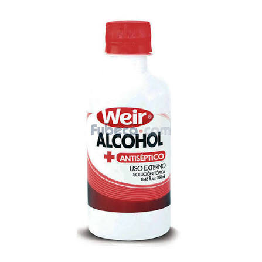
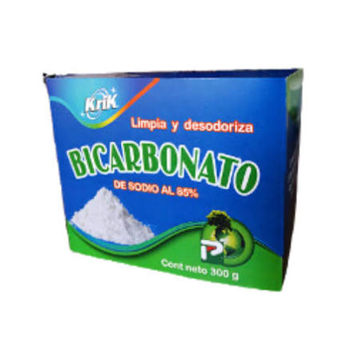
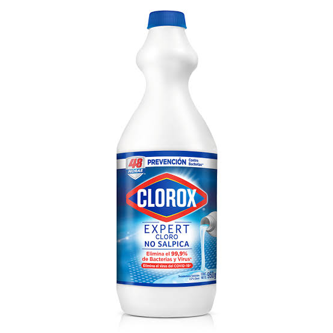
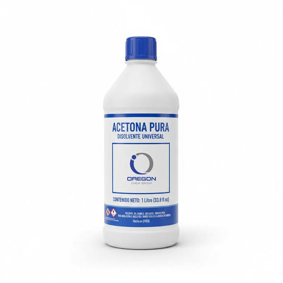
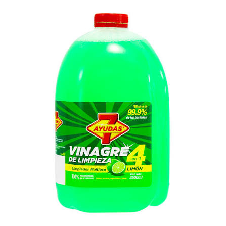

Jabón Liquido

El jabón líquido sirve para limpiar la piel, eliminar la grasa, la suciedad, los virus y las bacterias de las manos y el cuerpo.

El alcohol sirve principalmente como desinfectante, solvente industrial y antiséptico para limpiar la piel antes de una inyección.

El bicarbonato de sodio sirve como antiácido estomacal, agente de limpieza y leudante en repostería.

El cloro sirve principalmente para desinfectar el agua, limpiar superficies y eliminar bacterias, virus y hongos en el hogar y en la industria.

La acetona sirve principalmente como un disolvente potente capaz de disolver grasas, aceites, resinas, pinturas y plásticos, además de ser un producto clave en la industria química y el cuidado personal.
El jabón líquido sirve para limpiar la piel, eliminar la grasa, la suciedad, los virus y las bacterias de las manos y el cuerpo.

El vinagre sirve para limpiar el hogar, desinfectar alimentos, conservar comidas y como aderezo en la cocina, además de ofrecer beneficios para la salud como regular el azúcar en la sangre.